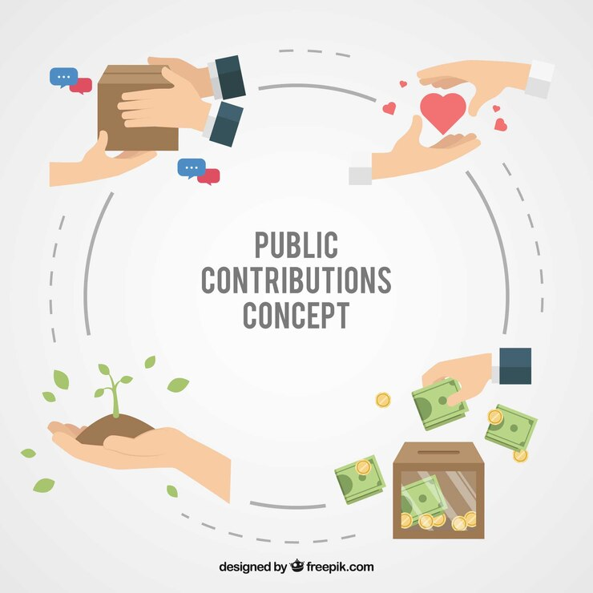
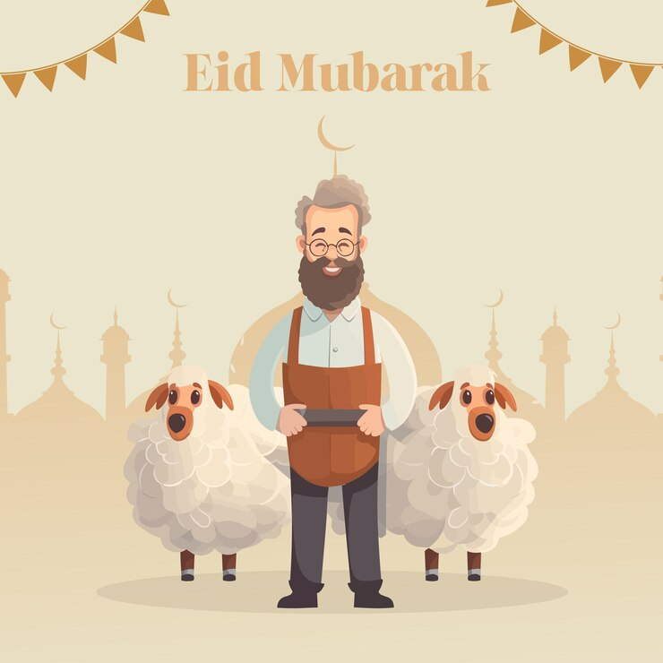

Our Blogs
A Flavor of Faith and the Joy of Giving
-

Donation
As Eid al-Adha approaches, the doors of generosity and goodness open wide, and the desire to help the needy and bring joy to their hearts increases. Because donating sacrificial meat is one of the most important rituals of this Eid, it is a great opportunity to gain piety and spread goodness throughout society.
-

Cooperation
Eid al-Adha is a great opportunity to strengthen cooperation and solidarity among community members by sharing the joy of the Eid with the poor and needy, and spreading happiness and blessings throughout the country.
-

Secrifice
Eid al-Adha is a grand occasion for Muslims all over the world, as they draw closer to Allah Almighty through great rituals, the most important of which is the ritual of sacrifice.